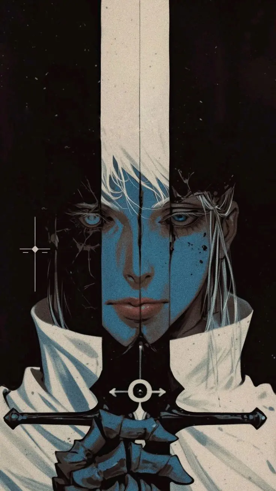

"Narrar não é apenas rolar dados; é construir memórias que duram décadas. Minha jornada começou na era de ouro, quando o Mundo das Trevas despertava no Brasil e as pérolas do sistema Daemon e 3D&T forjavam nossos primeiros heróis."
Há anos nessa cruzada, hoje utilizo o Foundry VTT para entregar imersão e alcançar maiores distâncias. Seja na estratégia ágil de Savage Worlds, nas novas lendas do D&D 5e (2024) ou explorando sistemas inéditos, estou em busca de pessoas que sejam tão apaixonadas quanto eu neste jogo que é o RPG.
O chamado está ao seu alcance. Você está pronto?
Estou narrando Savage Worlds aos domingos, uma campanha Cyberpunk misturada com fallout
Mas meu grande e audacioso plano será narrar Starfinder 2e, estou em busca de exploradores!
IDENTIDADE DISCORD: Calielfr
FREQUÊNCIA TELEGRAM: @calielbr